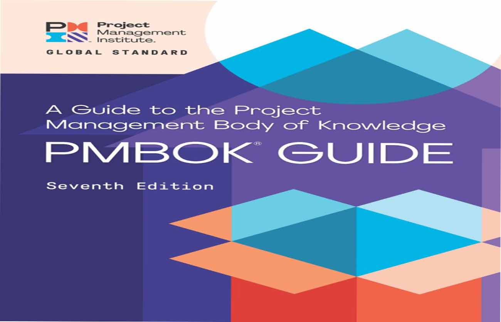

Refleja la gama completa de enfoques de desarrollo (predictivo,tradicional, adaptativo, agil, hibrido,etc.).Expande la lista de herramientas y tecnicas de una nueva sección, "Modelos, Metodos y Artefactos". Se enfoca ennlos resultados de los proyectos, ademas de los entregables
Conjunto de declaraciones que guia las acciones y los comportamientos de los profesionales de la dirección de proyectos con independencia del emfoque de desarrollo. Los dominios se refieren a las estrategias que haya que seguir para realizar el proyecto.
Las organizaciones esperan que los proyectos produzcan resultados más alla de las salidas o entregables. Los directores de proyecto entregan proyectos que crean valor para la organizacion y los interesados dentro del sistema para la entrega de valor.